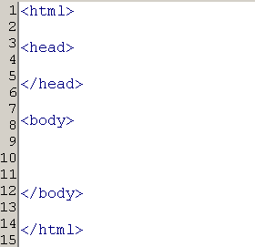
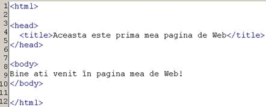
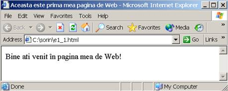
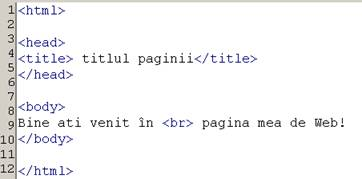
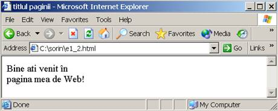
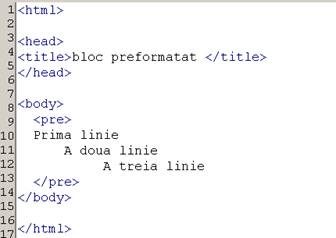
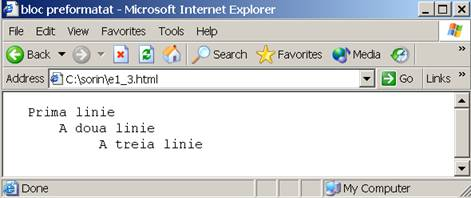

<html>
<head<</head>
</html>
<body> 
 <b><div align="center"><font size="+3" color="red"><u>Introducere in HTML!</u></font></div></b></br>
<br>
   <br>
     <br>
 <b><div align="left"><font size="+1">HTML (HyperText Markup Language), creat în Elvetia în anul 1989 este limbajul în care sunt scrise paginile</div></font>
 <b><div align="left"><font size="+1">World Wide Web (WWW). Termenii "document HTML" si "pagina Web" sunt sinonime. Hypertext reprezinta</div></font>
 <b><div align="left"><font size="+1"> posibilitatea de a crea legaturi (în engleza - link) între diferite documente. Markup Language înseamna "limbaj de</div></font>
  <b><div align="left"><font size="+1">etichetare". Atunci când se creaza o pagina în format HTML, ea va avea, în mod inevitabil, aceasta structura:</div></font><br>
  <br>
 <b><div align="left"><font size="+1">Multe din trasaturile lui, cum ar fi independenta fata de platforma (un document poate fi afisat în mod asemanator</div></font>
 <b><div align="left"><font size="+1">de computere diferite), structurarea formatarii si legaturile hipertext, fac din el un foarte bun format pentru documentele Internet si Web.</div></font><br>
 <b><div align="left"><font size="+1">Primele specificatiile de baza ale Web-ului au fost HTML, HTTP si URL. Utilizarea HTML propune scrierea textului, tabelelor si
referintelor la imaginile încadrate în pagina web, iar apoi se adauga tag-urile HTML pentru a descrie amplasarea elementelor în 
pagina. Paginile Web pot fi vizionate prin intermediul unor programe speciale, numite browsere, care sunt capabile sa 
interpreteze limbajul HTML. HTML dispune de un set predefinit de tag-uri, nu se pot crea tag-uri proprii. Pentru a complica 
lucrurile, exista versiuni diferite de browsere si versiuni diferite ale limbajului HTML, un tag recunoscut de un browser nu poate fi 
recunoscut de un browser diferit sau mai putin recent.</font></div><br>
<b><div><font size="+1">Exemple de tag-uri HTML:</font></div><br>
<b><div><font size="+1">1.<textarea cols="9" rows="1"><b>...</b></textarea> Pentru text <b>boldit</b>.</font></div>
<b><div><font size="+1">2.<textarea cols="9" rows="1"><u>...</u></textarea> Pentru text <u>subliniat</u>.</font></div>
<b><div><font size="+1">3.<textarea cols="9" rows="1"><i>...</i></textarea> Pentru text <i>italic</i>.</font></div>
<b><div><font size="+1">4.<textarea cols="9" rows="1"><p>...</p></textarea> Pentru a începe un paragraf nou.</font></div>
<b><div><font size="+1">5.<textarea cols="17" rows="1"><table>...</table></textarea> Pentru a insera un tabel.</font></div>
<b><div><font size="+1">6.<textarea cols="17" rows="1"><title>...</title></textarea> Pentru a intitula o pagina.</font></div><br>
<b><div><font size="+1">Tag-urile HTML indica efectele aplicate diferitelor parti de pagina în programele browser (cum ar fi Netscape Navigator si Internet
 Explorer). Prima versiune a HTML continea mai putin de 30 de tag-uri. Odata cu dezvoltarea web-ului, au aparut mai multe idei 
 pentru îmbunatatirea acestuia. În cea mai recenta versiune sunt mai putin de o suta de tag-uri de baza HTML. Implementarea 
 efectelor dorite poate fi facuta si cu un numar mai mic decît acesta. Majoritatea tag-urilor HTML trebuie sa fie deschise <textarea cols="2" rows="1"><a></textarea>, apoi 
 închise <textarea cols="3" rows="1"></a></textarea>.</font></div><br>
<b><div><font size="+1">HTML permite utilizatorilor sa produca pagini care includ texte, grafica si indicatori la alte pagini de WEB. Pentru ca informatia din 
documentul HTML sa fie pusa la dispozitia lumii, acesta trebuie sa fie instalat pe un server WEB. Testarea documentului se poate 
face cu Nescape Navigator sau cu Microsoft Internet Explorer.</font></div><br>
<b><div><font size="+1">HTML consta dintr-un standard de coduri care specifica în ce mod documentele vor fi afisate pe ecran de catre navigatoare, sau, 
mai simplu, se poate spune ca reprezinta limbajul de baza al WWW.</font></div><br>
<b><div align="left"><font size="+1">Limbajul prezinta o portabilitate deosebita, un document sursa HTML aratând identic pe orice tip de calculator si în orice tip de 
sistem de operare, sarcina interpretarii sale revenind diferitelor navigatoare. De retinut ca HTML este un limbaj în plina evolutie, 
astfel încât navigatoare diferite vor recunoaste seturi diferite de elemente HTML.</font></div><br>
<b><div align="left"><font size="+1">Hipertext înseamna ca orice cuvânt, fraza, imagine sau alt element al documentului vazut de un utilizator (client) poate face 
referinta la un alt document, ceea ce usureaza mult navigarea între multiple documente sau chiar în interiorul unui aceluiasi 
document. Structurarea riguroasa a documentelor permite convertirea acestora dintr-un format în altul precum si interogarea 
unor baze de date formate din aceste documente.</font></div><br>
<b><div><font size="+3">SGML si HTML</font></div><br>
<b><div><font size="+1">Tim Berners-Lee a utilizat ca model SGML (Standard Generalized Markup Language), un standard international in plina dezvoltare. 
SGML avea avantajul unei structurari avansate si al independentei de platforma, dar proiectarea lui a avut in vedere mai mult 
structura semantica a documentului decat modul de formatare. Flexibil, SGML putea fi descris ca o specificare pentru descrierea 
altor formate. Utilizatorii puteau crea noi formate (DTD, Document Type Definitions) care puteau fi intelese de orice produs soft 
SGML pur si simplu prin citirea mai intai a definitiilor noilor formate.</font></div><br>
<b><div><font size="+1">HTML este pur si simplu un DTD, deci o aplicatie a SGML. In primii ani de evolutie, HTML a crescut lent, in principal pentru ca ii 
lipseau posibilitãþile de a descrie publicatii electronice profesionale; limbajul permitea oarece control asupra fontelor dar nu permitea inserarea graficii.</font></div><br>
<b><div><font size="+1">Documentele HTML sunt documente in format ASCII si prin urmare pot fi create cu orice editor de texte. Orice document HTML începe cu notatia <textarea cols="8" rows="1"><html></textarea> 
si se termina cu notatia <textarea cols="8" rows="1"></html></textarea> . Acestea se numesc in literatura de specialitate "TAG-uri". Prin conventie, toate informatiile HTML încep cu o paranteza unghiulara deschisa
 "<" si se termina cu o paranteza unghiulara inchisa ">".</font></div><br>
<b><div><font size="+1">Tag-urile intre aceste paranteze transmit comenzi catre browser pentru a afisa pagina intr-un anumit mod. Unele blocuri prezinta delimitator de sfarsit de bloc, in timp ce pentru alte blocuri
 acest delimitator este optional sau chiar interzis.</font></div><br>
<b><div><font size="+1">Intre cele doua marcaje <textarea cols="8" rows="1"><html></textarea> ºi <textarea cols="8" rows="1"></html></textarea> se vor introduce doua sectiuni:</font></div><br>
<b><div><font size="+1"><li>sectiunea de antet <textarea cols="17" rows="1"><head>...</head></textarea>;</li></font></div>
<b><div><font size="+1"><li>sectiunea de antet <textarea cols="17" rows="1"><body>...</body></textarea>.</li></font></div><br>
<b><div><font size="+1">Blocul <textarea cols="17" rows="1"><body>...</body></textarea> cuprinde continutul propriu-zis al paginii HTML, adica ceea ce va fi afisat în fereastra browser-ului.</font></div><br>
<b><div><font size="+1">O eticheta poate fi scrisa atat cu litere mici, cat si cu litere mari, adica:</font></div>
<b><div><font size="+1"><textarea cols="26" rows="1"><HTML> = <HtmL> = <html><textarea>.</font></div><br>
<b><div><font size="+1">Caracterele "spaþ\tiu" si "CR/LF" ce apar intre etichete sunt ignorate de catre browser. In primul rand, titlul unei pagini se obtine 
inserand in sectiunea <textarea cols="17" rows="1"><head>...</head></textarea> a urmatoarei linii:</font></div>
<b><div><font size="+1"><textarea cols="55" rows="1"><title>Aceasta este prima mea pagina de Web</title></textarea></font></div><br>
<b><div><font size="+1">In plus, in sectiunea <textarea cols="17" rows="1"><body>...</body></textarea> putem scrie texte cat dorim. Daca nu se intalneste nici un marcaj < sau >, atunci
 interpretorul HTML le va lua ca texte simple si le va afisa pe ecran.</font></div><br>
<b><div><font size="+2">Exemplu:</font></div><br>
 <br>
<br>
<b><div><font size="+1">Continutul blocului <textarea cols="17" rows="1"><title>...</title></textarea> va aparea in bara de titlu a ferestrei browser-ului. Daca acest bloc lipseste intr-o pagina 
HTML, atunci in bara de titlu a ferestrei browser-ului va aparea numele fisierului (in cazul de fata e1_1.html)</font></div><br>
<b><div><font size="+1">Daca introducem mai multe linii intr-o pagina, browser-ul va afisa intr-un singur rand, intrucat caracterele 
" CR/LF " sunt ignorate de browser. Trecerea pe o linie noua se face la o comanda explicita, care trebuie sa apara in pagina html. 
Aceasta comanda este marcajul <br> ( de la " line break " - intrerupere de linie ).</font></div><br>
<b><div><font size="+1">Folosind operatiile de mai sus, se poate imbunatati exemplul anterior:</font></div><br>

<br>
<b><div><font size="+2"><u>Blocuri preformatate</u></font></div><br>
<b><div><font size="+1">Pentru ca browser-ul sa interpreteze corect caracterele " spatiu ", " tab " si " CR/LF " 
ce apar in cadrul unui text, acest text trebuie inclus intr-un bloc <textarea cols="17" rows="1"><pre>...<pre>.</textarea></font></div><br>
<b><div><font size="+2">Exemplu:</font></div><br>
<br>
<br>
<br>
</body>
</html>